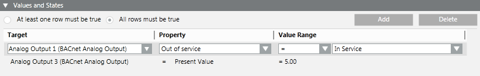

Values and States Conditions
The Values and States expander is available when you configure one of the following automated functions: journaling or reactions.
It lets you specify the necessary conditions related to changes in value/state undergone by system objects for triggering or filtering the function you configure.

- Each condition occupies one row. A row is true if the outcome of its comparison is true. Within each condition (row), you specify:
- A Target object.
- What Property of that object you want to monitor.
- What Value (or Value Range) of the monitored property will make the condition true.
- You can specify whether all of the conditions (AND logic between rows) or only one (OR logic between rows) has to be true to assert the Values and States trigger.
- To add a new row, do one of the following:
- Click Add: This creates a new row with the Target field set to No targets selected, the Property field set to No property selected, and the Value Range field empty.
- Drag-and-drop a target object from System Browser (or an object property from the Operation tab, or an event source from Event List or the Event Detail bar) into the empty area underneath the last-configured row: This creates a new row with the Target and Property fields set based on the linked object or property.
NOTE: You can drag-and-drop a multiple selection from System Browser provided all the selected objects belong to the same type (such as the same object model; for example, they are all Binary Input). - You cannot link scope nodes to the Target field.
Target
This field specifies the system object, or set of system objects, whose property you want to monitor for changes in value/state.
- To set or change the Target field of a row, drag one or multiple target objects from System Browser and drop them into the Target field. A popup menu displays where you can select one of the following:
- Add new elements: The linked objects are added to the Target field. If the Target field was already populated, the new objects will be appended to the existing ones.
- Replace Existing Filter: The linked objects will replace the existing ones in the Target field.
- Add New Filter: Creates a new row with the linked objects added to the Target field of the new row.
- Cancel Operation
- If the Target field contains multiple objects, you can:
- Click the drop-down list to view them.
- Click the x next to an object to remove it.
- Use the search box to filter the objects in the drop-down list. Note that the search box does not accept wildcards.
Property
This field specifies the property of the previously set target objects that you want to monitor.
- To set the Property of a row, do one of the following:
- From the drop-down list, select the property of the target object that you want to compare.
- Directly drag-and-drop a property from the Operation tab, into the Property field. This will directly set both the Target and Property fields.

If the target object has an associated function, the monitored property displays using the notation @property description [property name].
Value Range
This field sets the states, value, or range of values for the selected target property that will make the condition (row) true. You can do this in the following ways:
- To compare the selected target property with a static value/state, for example: Analog Output 2 [Present Value] = 50°F, or Binary Input 1 [Event State] = Off Normal:
- Select the relational operator (=, <>, is in, is out, <=, and so forth) that you want to use for the comparison. (Use is in and is out to specify a range).
- Depending on the type of property, you either directly enter a value (or pair of values) or select a state (or pair of states) from a drop-down list.
- To compare the selected target property against a property of some other object (or against another property of the same object, for example: Analog Output 2 [Present Value] > Analog Input 1 [Present Value]:
- Select the desired relational operator as above.
- Drag-and-drop a comparison object into the Value Range field, and select the desired property of that object from the drop-down list.
- Directly drag-and-drop the comparison property from the Operation tab.
- Drag-and-drop an event source from Event List or the Event Detail bar.

Value range setting
Whether the Value Range field is empty or displays a value depends on the compatibility between the target and comparison objects. The name of the object is automatically selected if the target and comparison objects have this in common (for example, Description); if the name is not compatible, the default property of the object model is automatically selected, if compatible; if the default property is not compatible, the first compatible property is selected; if no property is compatible the field is empty.
If you dropped (linked) an object onto the Value field, it will display using the notation object description(object type).property description [property name], regardless of whether the target object has an associated function.
Value range and scaled units
If you set a numeric value in the Value Range field for the selected target property, this value also displays the relevant scaled or unscaled unit of measure defined for the selected target property.
If you specify different target properties for the Target field, and then set a numeric value in the Value Range field, this value will be highlighted in blue followed by an asterisk (*) to indicate that the value will be used as it is regardless of the scaled or unscaled unit of measure defined for the selected target properties.